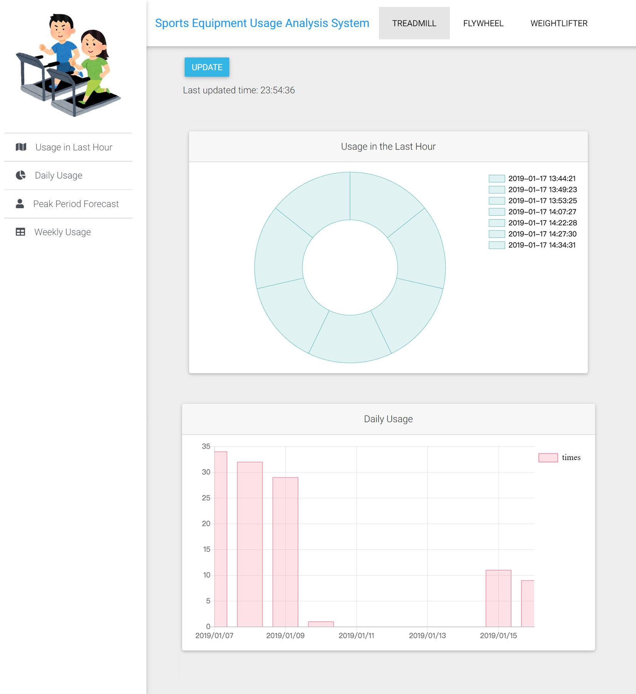

>>>Works in NTHU
Sports Equipment Usage Analysis System
*An implementation of IoT technology Introduce:The purpose of this project is to monitor the usage of sports equipment. First, sensors are installed on the sports equipment. Once they obtain vibration information, they will upload the data to the server via LoRaWAN. The following four results are further analyzed through these data: usage in the last hour, daily usage, peak period forecast, and weekly usage. Finally, a website is created to present the real-time information in charts.Development Tools & Technology:LoRaWAN, HTML, CSS, JavaScript |
Glasses Wearing Simulator
*An application combines deep learning and computer vision Introduce:This project aims to recommend suitable glasses for the users and generate a simulation image in real-time. Once the user input his/her photo, the gender and age will be determine by a pre-trained deep learning model. Then, particular glasses style which suits the user will be recommended. Moreover, it detects user's eyes and generates a simulation image of user wearing glasses with OpenCV.Development Tools & Technology:CNN deep learning model, OpenCV, python |
Fallen Two
*A 2D 2-player platform game on PC develpoed with Unity3D Introduce:I worked with my team to create this 2D 2-player platform game on PC. The goal of the game is to collect totem fragments to clear the stage. It requires two players to cooperate by controlling two characters with different abilities. Also, there are some cutscenes and dialogues between levels to present the story behind the game.Development Tools & Technology:Unity3D, C#, PhotoshopMy Responsible Part:Programming, 2D Art, Level Design |
Salar de Uyuni
*An application of computer graphics Introduce:The project aims to simulate the dynamic scenery of the Uyuni Salt Marsh (also known as the Mirror of the Sky) with OpenGL. As time progresses, the scene will gradually change from dawn to night. The light and shadow of objects and water vary with the position of the sun. In addition to the flowing clouds, the water surface also continually fluid and show refraction and reflection. Users can adjust parameters such as time, clouds amount, water flow rate, and water surface height. Moreover, users can move the position and perspective through the keyboard and mouse as if actually walking in the scene.Development Tools & Technology:OpenGL, GLSL |
Door Dectection System in 360° Panoramic Image
*An attempt and improvement to detect objects in 360° panorama Introduce:This is my achievement in Special Topic on Implementation. I participate in the industry-university cooperation project. In this project, we cooperate with a real-estate agency, aiming to reconstruct the indoor 3D model from panoramic images of rooms, and combined with VR technology to create a system for house viewing. I was responsible for detecting the coordinates of doors in the input panoramic image to make the use of joining different rooms in the 3D model. I applied the Semantic Segmentation deep learning model to detect the doors and utilized OpenCV for image processing to get the precise coordinates. Due to the distortion of a panorama, I have to project it into the perspective view during the processing. Also, I project the original panorama to different angles and separately detect the coordinates of doors and then vote for the most convincing coordinates as a final result.Development Tools & Technology:Semantic Segmentation, OpenCV, python |